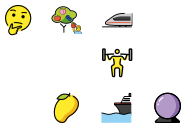
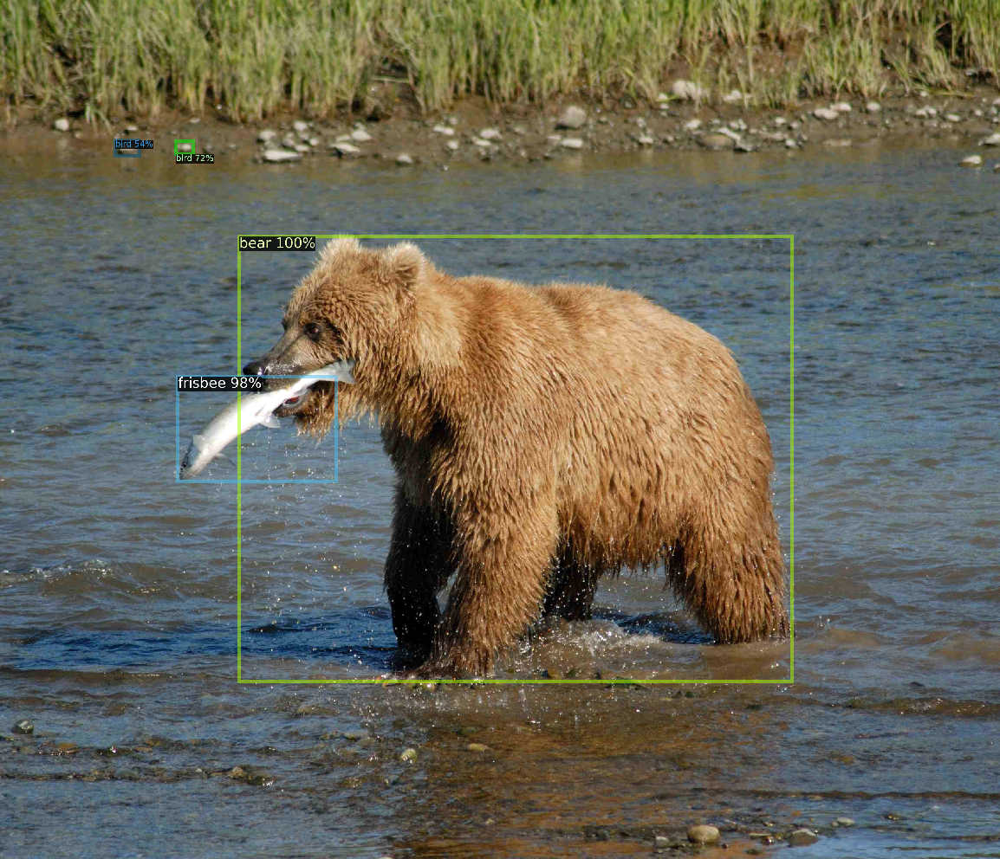
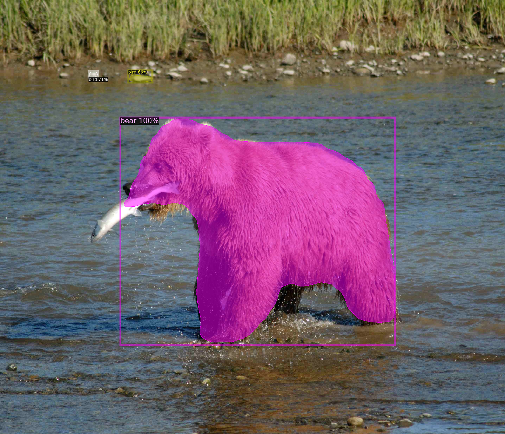

Introduzione a Detectron2
Alessandro Re
https://github.com/akiross/intro-to-d2
Momento Ego
Momento Ego
- 🧒 🖥️ Nerd fin da tenera età (i286 + QBASIC)
- 🐍 PyCon Italia >= 3
- 🧑🎓 MSc @ unimib.it - 🧑🏫 PhD @ unl.pt
- 🧑💻 ex Sr. ML Eng @ standard.ai 🦀 🐍
- 🥷 CTO @ D/Vision Lab - dvisionlab.com
- 🎉 Intervista Pythonista #8 🎉 🚀
Disclaimer
Disclaimer
- Non sono un espertone di Detectron2 o CV.
- Conosco pochi modelli, ma male.
- Questo è ciò che ho imparato in ~4 mesi di uso RnD, nulla è ancora andato in produzione.
Detectron 2
Detectron 2
- Libreria (e tools) per Computer Vision 👁️
- by Facebook AI Research (FAIR)
- Basato su PyTorch e torchvision
- Licensed Apache-2.0/CC BY-SA 3.0 ⚖️
- In buono stato di manutenzione 👍
- Comunità Ok (meglio di altre) ✅
Computer Vision
Computer Vision
Automatizzare compiti (tasks) che tipicamente vengono risolti dall'apparato visivo.
D2 fornisce una libreria per affrontare alcuni task di CV: codice python e insieme di modelli già addestrati.
Computer Vision
Object Detection
Computer Vision
Instance Segmentation
Computer Vision
Keypoint Detection
Computer Vision
Panoptic Segmentation
Computer Vision
DensePose (RnD: CWL ma poco coeso)
Modelli Addestrati??
🐕 ➡️ 🐕🦺 ? 🤔
Machine Learning
Risolvere un problema (difficile da codificare) partendo dai dati
E.g. come scrivereste un codice (senza ML) per fare detection di...
- un QR code?
- una Ferrari F-40?
- un frutto?
Machine Learning
Machine Learning
D2 How To
D2 How To
Consideriamo una foto di esempio, tipo questa di me al lago nell'estate 2021.

D2 How To
# creo una directory e ci vado dentro
mkdir workspace && cd workspace
# scarico una foto di esempio
curl -o input.jpg https://upload.wikimedia.org/wikipedia/commons/4/46/Bear_Alaska_%283%29.jpg
# scarico anche detectron2 che contiene lo script di demo e le configurazioni
git clone https://github.com/facebookresearch/detectron2
# installo detectron2 per pytorch 1.10 su CPU
pip install detectron2 -f \
https://dl.fbaipublicfiles.com/detectron2/wheels/cpu/torch1.10/index.html
D2 How To - object detection
# Usiamo la demo fornita
cd detectron2/demo
python3 demo.py \
--config-file ../configs/COCO-Detection/faster_rcnn_R_50_FPN_3x.yaml \
--input ../../input.jpg \
--opts MODEL.DEVICE cpu \
MODEL.WEIGHTS \
detectron2://COCO-Detection/faster_rcnn_R_50_FPN_3x/137849458/model_final_280758.pkl
Output - object detection
D2 How To - instance segmentation
# Usiamo la demo fornita
cd detectron2/demo
python3 demo.py \
--config-file ../configs/COCO-InstanceSegmentation/mask_rcnn_R_50_FPN_3x.yaml \
--input ../../input.jpg \
--opts MODEL.DEVICE cpu \
MODEL.WEIGHTS \
detectron2://COCO-InstanceSegmentation/mask_rcnn_R_50_FPN_3x/137849600/model_final_f10217.pkl
Output: instance segmentation
D2 How To - Model Zoo
Esploriamo demo.py
Esploriamo demo.py
Il codice di demo ci permette di farci un'idea di come viene usato D2 e di quali sono le componenti principali, quindi vale la pena studiarlo un po'.
Esploriamo demo.py
-
demo.py
-
setup_cfg()
fa il setup della configurazione usata dal d2 -
get_parser()
è un semplice argparse.ArgumentParser per la CLI -
test_opencv_video_format()
usata per determinare il vcodec da usare -
main
in cui si processano gli args e si lancia il codice richiesto
-
setup_cfg()
-
predictor.py
-
VisualizationDemo
processa gli input e lancia le predizioni sui frame -
AsyncPredictor
usato per lanciare le predizioni in modo async/parallelo
-
VisualizationDemo
Esploriamo demo.py
Cose importanti da ricordare
-
Configurazioni flessibili basate su YAML
(e/o file python). - DefaultPredictor per inferenza del modello.
- Visualizer per vedere i risultati.
- Soglie di confidenza (SCORE_THRESH_TEST).
COCO pretrain
COCO pretrain
Training con COCO (o ImageNet).


COCO pretrain
Non ci aspettiamo che un modello sappia riconoscere immagini drasticamente diverse.
È possibile fare training con nuovi dati, devono essere in una certa struttura, stesso numero di classi, fondamentalmente lo stesso dataset.
COCO pretrain
Com'è fatto il dataset?
coco/
annotations/
panoptic_{train,val}2017.json
panoptic_{train,val}2017/ # png annotations
panoptic_stuff_{train,val}2017/ # generated by the script mentioned below
Custom training
Custom training
C'é la possibilità di usare dataset custom e fare training (anche multi-GPU*) in modo relativamente semplice.
Custom training
In breve
- Strutturare i dati in un formato noto
- DatasetCatalog.register("ds_val", dati)
- MetadataCatalog.get("ds_val").set(thing_classes=cat)
- Opt: subclass COCOEvaluator e DefaultTrainer
Custom training
I miei take away
- Mettete i vostri dati in formato COCO.
- Usate strumenti tipo fiftyone per conversione e verifica.
- Modelli "grossi": potreste aver bisogno di "tanti" dati.
Messa in Produzione
Messa in Produzione
🤷
basata su pytorch... quindi torch serve?
d2go: tool basato su d2 che però usa tecniche e modelli per aumentare la velocità (a scapito di un po' di qualità).